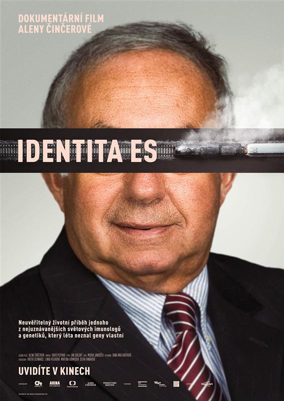

|
 |
Režisérka Alena Činčerová natočila celovečerní dokument Identita ES. Předcházela tomu dlouhá etapa předběžného shromažďování archivních materiálů z Kanady a Prahy. Dokument přináší neuvěřitelný životní příběh jednoho z nejuznávanějších světových imunologů a genetiků, Čechokanaďana profesora Emila Skamene. Celý život zasvětil odhalování tajemství genů a přitom sám neznal po desítky let svou vlastní identitu. Jen souhrou náhod objevil, že je někdo úplně jiný. Poté co opustil Československo, žije již léta v Kanadě. A zcela výjimečně nosí na klopě malou zlatou lilii jako rytíř řádu nejvýznamnějších Quebečanů. A nad ním kulatý nenápadný odznáček, vyznamenání od britské královny Alžběty pro Kanaďany, kteří jsou významní pro Britské impérium. Profesor ES se narodil za II. světové války v haličské Bučači asi v srpnu1941. Přesněji to neví. Svou pravou identitu neznal třicet let. Narodil se jako Emil Kleiner, jako dítě židovských rodičů, jako syn významného haličského notáře Benio Kleinera a jeho manželky Gizely. Jeho rodiče zahynuli při pogromu v roce 1943. Krátce před svou smrtí však dokázali zařídit, že osmnáctiměsíční synek byl složitou cestou dopraven do Prahy. Z 16 000 bučačských Židů přežili válku jen čtyři lidé. Za celoživotním snažením profesora Skamene stojí touha dokázat, že záchrana jeho života měla cenu. |

Deti Nagána